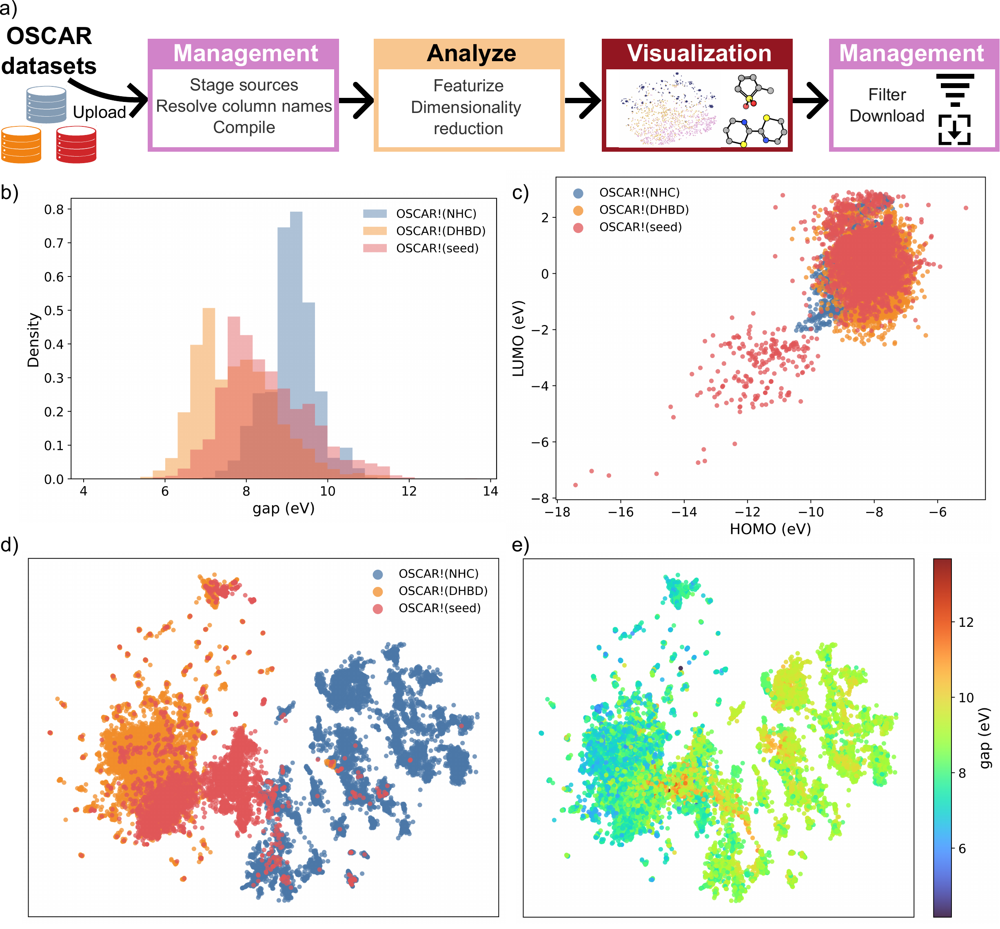
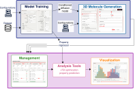
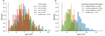

Workflows¶
This page describes common end-to-end usage patterns. Each workflow links to the relevant tab documentation for parameter details.
1. Generate → Analyze → Visualize¶
The most common workflow: produce a batch of molecules, enrich them with properties, then explore the chemical space.
- 3D molecule generation — run a de-novo job and inspect the generated XYZ files in the Results panel.
- Data Manager — use Add generated molecules, click Register generated molecules, then Compile dataset.
- Analysis tools — run XYZ to SMILES (required first), then XTB electronic properties or Predict properties.
- Apply results to the dataset.
- Analysis tools — run Featurize (SOAP), then Dimensionality reduction (UMAP) to produce 2D layout columns.
- Visualization — create a 2D scatter plot with UMAP coordinates on the axes, color by energy or HOMO–LUMO gap.
2. Property-targeted generation¶
Generate molecules steered toward a specific property value using CFG.
- Choose a CFG model in 3D molecule generation (labelled "CFG" in the model list).
- Set CFG scale > 1 (start with 2–3) and enter the target value for each property.
- Optionally set a Negative target to steer away from an undesired value.
- Run multiple jobs with different seeds to build a diverse set.
- Proceed with steps 2–6 from workflow 1 to compare the generated set against an unconditional baseline.
3. Scaffold extension (outpaint)¶
Extend a known fragment into a complete molecule.
- In Structure-directed generation, load a reference
.xyzscaffold. - Set mode to Outpaint.
- Click the atoms that form the attachment point(s) — these are held fixed.
- Set Connector bonds for each selected atom.
- Set Fixed atom count to scaffold atoms + desired extension size.
- Generate, then use Use as ref (→) to feed a promising result back as a new scaffold for further extension.
4. Dataset curation and export¶
Curate a mixed-source dataset for downstream modelling.
- Data Manager — stage each source (CSV + XYZ folder, ASE .db, or generated output folder).
- Per-source: rename or drop columns to harmonise the schema.
- Compile with duplicate-ID = rename and column-conflict = merge.
- Analysis tools — run Validity and connectivity metrics to flag problematic geometries.
- Visualization — use a Boolean filter on validity columns to exclude invalid molecules.
- Data Manager → Download dataset → select Filtered view and click Download ASE .db for downstream use.
5. Multi-source dataset curation and property-space exploration¶
This workflow uses AutomaticMolCraft as a standalone curation environment — no generative model is required. It is illustrated in the paper using three OSCAR organocatalyst sources (OSCAR-NHC, OSCAR-DHBD, and OSCAR-seed).
Steps¶

(a) OSCAR-NHC, OSCAR-DHBD, and OSCAR-seed sources are uploaded, staged, reconciled, compiled, featurised, projected, filtered, and exported through the Management, Analysis tools, and Visualization workspaces. (b) Source-resolved distribution of the computed HOMO–LUMO gap. (c) HOMO–LUMO property-space projection, coloured by source. (d–e) Two-dimensional fingerprint projection coloured by source and by gap value.
Stage and reconcile sources
- Open the Data Manager tab.
- Register each source (CSV + XYZ folder or ASE
.db) and assign a short source label (e.g.NHC,DHBD,seed). - In each source flashcard, rename or exclude columns to harmonise the schema across sources. If two sources use different column names for the same quantity, rename both to a shared name before compiling.
Compute derived columns before compilation
- If a derived quantity is needed (e.g. a HOMO–LUMO gap from separate HOMO and LUMO energy columns), click Computed on the staged source, choose the two operand columns and the operator (
-), and name the output column (e.g.gap_eV). The computed column participates in compilation like any other selected column.
Compile
- Set duplicate-ID policy =
renameand column-conflict policy =merge, then click Compile dataset. - After compilation the header card shows the total molecule and column count across all sources. The
data_sourcecolumn records which source each row came from.
Featurize and project
- Open Analysis tools. Run XYZ to SMILES to add
smilesandmorgan_fpcolumns. - Run Dimensionality reduction (UMAP, metric =
cosine) on themorgan_fpcolumn to producedim_red_x/dim_red_ycoordinates. - Apply both results to the dataset.
Explore and filter
- Open Visualization. Add:
- A Histogram on the
gap_eVcolumn to see the property distribution per source (color bydata_source). - A 2D Scatter with
homo/lumoon the axes to inspect the property-space structure. - A 2D Scatter with
dim_red_x/dim_red_yon the axes, colored bydata_sourceorgap_eV, to see the chemical-space layout.
- A Histogram on the
- Brush or lasso a region of interest in any plot — the selection propagates across all panels and into the 3D molecule viewer.
- Use the Range filter on
gap_eVin the filter panel to define property subsets (e.g. low-gap ≤ 7.0 eV, high-gap ≥ 9.0 eV).
Export
- With a filter active, return to Data Manager and choose Filtered view in the export panel. Download as CSV + XYZ zip or ASE .db for downstream modelling.
6. Conditional generation benchmarking¶
This workflow uses AutomaticMolCraft to run a property-directed generation benchmark — comparing different conditioning strategies and hyperparameters using a shared, traceable dataset state. It is illustrated in the paper using conditional HOMO–LUMO gap generation on the FORMED dataset.
Overview¶
The key idea is that AutomaticMolCraft keeps model configuration, generated molecules, quality metrics, and predicted properties in one compiled dataset, so all runs can be compared side-by-side in Visualization without manually reconciling output folders.

Model Training is used to configure and train the conditioned diffusion models and the HOMO–LUMO gap regressor. The 3D Molecule Generation workspace samples molecules from the trained conditional checkpoints, Management registers the generated structures and benchmark metadata as labelled dataset sources, Analysis tools perform geometry optimisation and property prediction, and Visualization supports comparison of generated molecules and derived descriptors in linked plots and molecular viewers.
Steps¶
Train conditional models
- Open the Model Training tab.
- Select task family
diffusion. - Set Context mask rate > 0 (e.g. 0.2) — this randomly drops the property label during training, enabling classifier-free guidance at inference.
- Configure the dataset path, atom vocabulary, and training hyperparameters. Use Dry mode first to validate the generated YAML before committing compute.
- Submit separate training runs for each configuration you want to compare (e.g. different conditioning strategies or normalization schemes). Each run appears in the job history and produces a checkpoint under
MOLCRAFT_MODELS_DIR. - If property prediction is needed downstream, also train a regression model (task family =
regression) on the same dataset and property column.
Generate with property targets
- Open 3D molecule generation. Select a trained conditional checkpoint (labelled CFG in the model list).
- Set a CFG scale (e.g. 1–3) and enter the property target (e.g. HOMO–LUMO gap = 3 eV for a low-gap target, or 15 eV for a high-gap target).
- Run the job and inspect generated structures in the split viewer.
- Repeat for each combination of checkpoint, target value, and CFG scale you want to benchmark. Keep seed fixed across runs for a fair comparison.
Register and compile
- Open Data Manager. For each generation job, click Add generated molecules, select the job, and set a Data source label that encodes the experimental conditions (e.g.
concat_mad_cfg2_gap3). - Once all runs are staged, compile with duplicate-ID = rename so molecules from different runs are not merged.
- Add any supplementary benchmark metadata as a separate CSV source (e.g. a table of model names, conditioning method, normalization scheme) and join it via the source label.
Analyze: quality checks and property prediction
- Open Analysis tools.
- Run Validity and connectivity metrics (metric set =
posebuster) to flag geometrically invalid structures. Apply the result. - Run XTB geometry optimization (level =
gfn2) on valid structures. Optionally register the optimised geometries as a new source or replace in-place. - Run Predict properties using the trained regression checkpoint to add predicted HOMO–LUMO gap values.
- Apply all results to the active dataset.
Compare in Visualization
- Open Visualization. Add plots with:
- X axis: CFG scale (or model label), Y axis: predicted HOMO–LUMO gap — to see whether the model shifts molecules toward the target.
- Color by: PoseBuster pass/fail boolean column — to inspect the quality–guidance trade-off.
- A Histogram on the gap column, colored by source label, to compare distributions across runs.
- Use lasso selections to inspect 3D structures from specific runs side-by-side in the molecule viewer.

(a) Effect of CFG scale on HOMO–LUMO gap targeting and molecular-quality checks for the Concat. model with fixed gap scaling. (b) Comparison of conditioning and normalization choices, showing the target-dependent response of the Concat. model and the improved quality retention obtained with MAD normalization.
What to look for¶
- Guidance effectiveness: does increasing CFG scale shift the predicted property toward the target? Weak conditioning strategies (e.g. adapter-based conditioning under some settings) may show little target-dependent response.
- Quality cost: higher CFG scales typically reduce the fraction of structures passing PoseBuster checks. MAD normalization of property values has been shown to retain a higher validity rate than fixed scaling at equivalent CFG strengths.
- Source label traceability: the
data_sourcecolumn keeps each run's provenance intact throughout the compiled dataset, so all comparisons remain traceable.